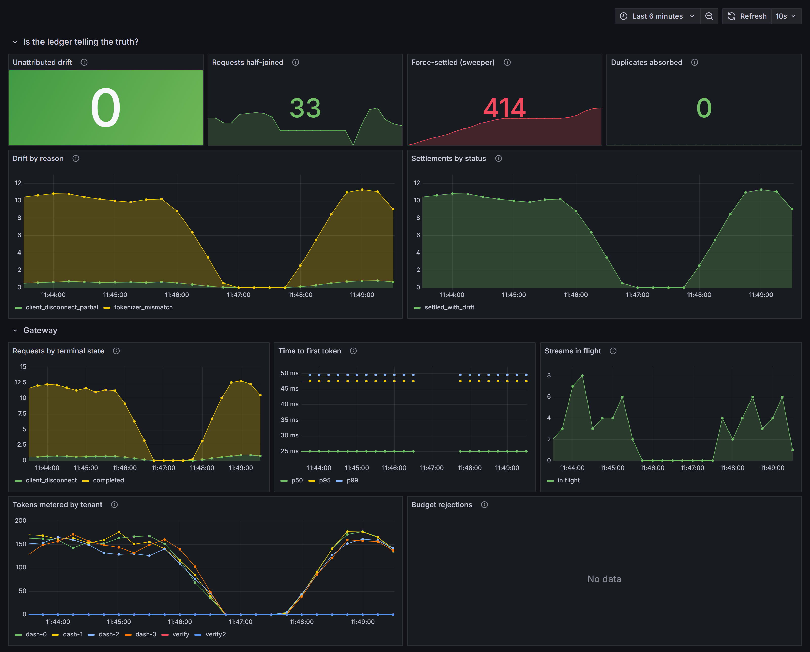

Every LLM metering tool trusts a single usage number. That number is wrong in exactly the ways anyone who has worked on payments will recognise — dropped streams, retries, evicted pods, providers that misreport. inference-ledger counts tokens off the wire and ingests provider-reported usage independently, reconciles the two over Kafka, and attributes every disagreement to a cause.
The live dashboard is a read-only Grafana on a home server, up when the box is — the screenshot below is always current regardless.

Two independently-computed numbers, joined per request on a partitioned log.
| Scenario | Accounted | Pending | Result |
|---|---|---|---|
| gateway-sigkill | 100.00% | 0 | PASS |
| gateway-sigterm-drain | 100.00% | 0 | PASS |
| broker-partition | 100.00% | 0 | PASS |
| duplicate-delivery | 100.00% | 0 | PASS |
| provider-usage-skew | 100.00% | 0 | PASS |
| reconciler-rebalance | 100.00% | 0 | PASS |
The suite was built to produce evidence and instead produced a bug list — an unreachable drift state, a sweeper racing its own consumer, an unretried stale-connection path. Finding those is the point. Full write-up in the README.
Bundled infrastructure (Redpanda, Postgres, Redis) and a mock upstream, so the whole system runs on one small box at zero cost with no API key. The dashboard above is that tier, running live.
docker compose … up · helm install on kind
The same gateway, reconciler and chart, pointed at managed services — a Helm values flip from bundled to EKS + MSK + RDS, provisioned by Terraform. Everything needed to run it for real ships in the repo.
terraform apply · helm install --set redpanda.enabled=false